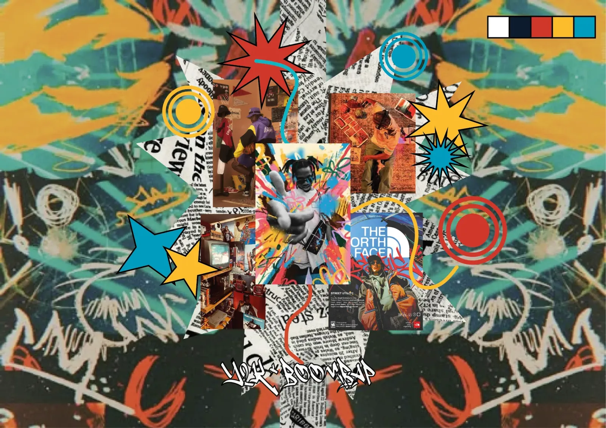

Fotografia P&B
A base de cada cartão: pessoas reais em lugares do cotidiano, sem cor, para o resto da composição se destacar.

High · Sonotws
A música "High", do Sonotws, traduzida em 10 cartões postais impressos: fotografia, colagem digital e ilustração para mostrar onde essa música costuma tocar.
Projeto em dupla com Lucas Goes, no 1º semestre de Produção Multimídia, na disciplina de Processos Gráficos: direção visual, colagem digital, ilustração e diagramação dos 10 cartões, frente e verso.
Como transformar uma música em algo que dá para segurar na mão?
O projeto pedia para traduzir uma música no meio impresso, em 10 cartões postais. Sem som, sem movimento: só papel, imagem e cor para fazer alguém ouvir.
Em vez de dividir a letra, cada cartão mostra um lugar onde "High" costuma tocar: no fone dentro do ônibus, no skate, na barbearia, na roda com os amigos. A música vira trilha do dia a dia.
Dá o play e vira os cartões ouvindo a música.
01 No ônibus
02 Atravessando a rua
03 Na plataforma
04 Na quadra
05 No quarto
06 No meio do som
07 No skate
08 Na barbearia
09 De bike pelo túnel
10 Na roda com os amigos
Fotografia em preto e branco, recortes de jornal e formas vetoriais (estrelas, alvos e rabiscos) em cinco cores chapadas, com a energia dos anos 2000 e do rap de rua.

A base de cada cartão: pessoas reais em lugares do cotidiano, sem cor, para o resto da composição se destacar.
Recortes de jornal rasgados atrás das figuras, como pôsteres colados na rua.
Estrelas, alvos e rabiscos em vermelho, amarelo e azul: o ritmo da música desenhado por cima da foto.
Cada verso ganha uma das três cores da paleta, com selo e linhas de endereço sobre a mesma textura de jornal. O cartão funciona de verdade: dá para escrever e mandar a música para alguém.
Primeiro semestre de Produção Multimídia, disciplina de Processos Gráficos.